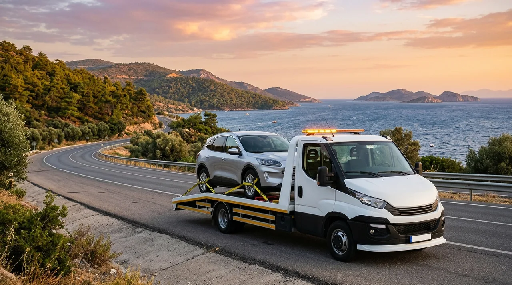
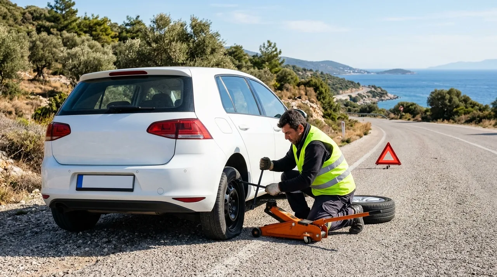

7/24 Acil & Tekne Çekici
Oto, Tekne/Bot & Şehirler Arası Çekici
Binek, SUV ve hafif ticari araçların yanı sıra Bodrum–Milas marinalarında tekne ve bot çekici ile Türkiye geneli şehirler arası güvenli taşıma sağlıyoruz.
Aracınız D330 karayolunda, yarımada koylarında veya Milas mahallelerinde arıza mı yaptı? Güvercinlik ve Mumcular'daki stratejik bekleme noktalarımızdan hem Bodrum hem Milas yönüne dakikalar içinde çıkıyoruz.

Çekici araçlarımız Muğla Bodrum ile Milas'ı birbirine bağlayan D330 üzerindeki Güvercinlik Mahallesi ve iç kavşak merkezi Mumcular Mahallesi bekleme noktalarında hazır beklemektedir. İhtiyacınıza göre en yakın noktadan doğrudan çıkış yapıyoruz.
Binek, SUV ve hafif ticari araçların yanı sıra Bodrum–Milas marinalarında tekne ve bot çekici ile Türkiye geneli şehirler arası güvenli taşıma sağlıyoruz.
 Vinçli Kayar Kasa
Vinçli Kayar Kasa
Yoldan çıkan, şarampole kayan, tekerleği kilitlenen veya kaza geçiren araçları çelik halatlı hidrolik tambur ve kayar platformla hasarsız kurtarıyoruz.
 Yerinde Marş Desteği
Yerinde Marş Desteği
Havalimanı otoparkında, marina çevresinde veya yazlık sitelerde aküsü boşalan araçlara çekici masrafına gerek kalmadan yüksek amperli takviye sağlıyoruz.

Yol Kenarı MüdahaleD330 ve D525 emniyet şeridinde veya virajlı koy yollarında lastiği yarılan araçlar için güvenli duba/reflektör önlemi alarak stepne değişimi yapıyoruz.
0537 844 38 81 hattımızı arayın ya da WhatsApp butonuna basarak mevcut GPS konumunuzu ve araç durumunu paylaşın.
Gerçek kilometreye göre varış süremizi ve sürpriz ek ücret içermeyen net taşıma fiyatımızı yola çıkmadan öğrenin.
Aracınız dört noktadan spanzetle sabitlenerek dilediğiniz sanayi ustasına, yetkili servise veya kapınıza teslim edilsin.
Aşağıdaki rakamlar tahmini değil; aracımızın beklediği Güvercinlik noktasından (37.138014, 27.582321) OpenStreetMap / OSRM karayolu motoruyla ölçülmüş gerçek sürüş verileridir. Yaz sezonunda (Haziran–Eylül) yarımada trafiğine göre 5–10 dk fark oluşabilir.
| Bölge / Mahalle | Gerçek Yol Mesafesi | Normal Sürüş | Tahmini Varış (Hazırlık Dahil) |
|---|---|---|---|
| Güvercinlik (Merkez Noktamız) | 0.0 km | ~0 dk | 5-12 dk (Yerindeyiz) |
| Torba, Bodrum | 17.4 km | ~18 dk | 21-30 dk |
| Bodrum Merkez (Çarşı) | 21.0 km | ~19 dk | 22-31 dk |
| Gümbet, Bodrum | 23.7 km | ~23 dk | 26-35 dk |
| Konacık, Bodrum | 24.4 km | ~22 dk | 25-34 dk |
| Bitez, Bodrum | 26.6 km | ~23 dk | 26-35 dk |
| Ortakent (Müskebi), Bodrum | 29.9 km | ~27 dk | 30-39 dk |
| Yalıkavak, Bodrum | 38.0 km | ~35 dk | 38-47 dk |
| Gündoğan, Bodrum | 33.4 km | ~34 dk | 37-46 dk |
| Türkbükü (Göltürkbükü), Bodrum | 30.3 km | ~32 dk | 35-44 dk |
| Turgutreis, Bodrum | 39.9 km | ~33 dk | 36-45 dk |
| Gümüşlük, Bodrum | 43.3 km | ~40 dk | 43-52 dk |
| Akyarlar, Bodrum | 47.6 km | ~44 dk | 47-56 dk |
| Mumcular (2. Bekleme Noktamız) | 0.0 km | ~0 dk | 5-12 dk (Yerindeyiz) |
| Yalıçiftlik (Çiftlik), Bodrum | 24.8 km | ~29 dk | 32-41 dk |
| Milas-Bodrum Havalimanı (Ekinanbarı) | 22.3 km | ~26 dk | 29-38 dk |
| Boğaziçi (Adabükü), Milas | 11.4 km | ~19 dk | 22-31 dk |
| Meşelik, Milas | 7.6 km | ~12 dk | 15-24 dk |
| Dörttepe, Milas | 12.9 km | ~20 dk | 23-32 dk |
| Güllük, Milas | 26.6 km | ~28 dk | 31-40 dk |
| Kıyıkışlacık, Milas | 44.9 km | ~48 dk | 51-60 dk |
| Milas Merkez | 35.5 km | ~36 dk | 39-48 dk |
| Beçin, Milas | 34.3 km | ~34 dk | 37-46 dk |
| Bafa, Milas | 60.5 km | ~61 dk | 64-73 dk |
| Selimiye, Milas | 48.4 km | ~50 dk | 53-62 dk |
| Ören, Milas | 73.4 km | ~68 dk | 71-80 dk |
Bodrum'un 56, Milas'ın 132 resmi mahallesinin tamamında aktifiz. Sık çağrı aldığımız başlıca koridorlar:
Çarşı, Kumbahçe, Eskiçeşme, Konacık, Türkkuyusu Sanayi ve tüm 56 Bodrum mahallesi için 7/24 oto çekici.
Emek Mah. Sanayi Sitesi, Beçin, Hisarbaşı, Söke–Yatağan kavşağı ve tüm 132 Milas mahallesinde kurtarıcı.
Araçlarımızın hazır beklediği Güvercinlik D330 ve Mumcular–Karaova noktalarında 5–12 dakikada anında müdahale.
D-Marin Turgutreis, Turgutreis Yeni Sanayi, Kadıkalesi (Peksimet), İslamhaneleri ve Akyarlar çekici hizmeti.
Yalıkavak Marina, Dirmil (Gökçebel), Geriş ve Dağbelen yokuşlarında alçak şasi ve SUV uyumlu kayar kasa.
Ekinanbarı Havalimanı kavşağı, iç/dış hatlar otoparkı akü takviyesi ve kiralık araç yol yardım desteği.
Dar sahil sokakları, Adnan Menderes Cd., Bitez kavşağı ve Müskebi (Ortakent) – Yahşi hattında hızlı çekici.
Güvercinlik üssümüze sadece 11,4 km uzaklıktaki Adabükü siteleri ve 26,6 km mesafedeki Güllük Marina yol yardımı.
Sakarkaya dağ yolu, Beçin, Ören Marina ve Gökova Çökertme sahil güzergahında güvenli oto kurtarma.
Bölgedeki sürücülerin çekici, yol yardım, ücretlendirme ve varış süreleriyle ilgili en sık sorduğu sorular:
Evet. Korkmaz Oto Kurtarma haftanın 7 günü, resmi tatiller ve gece saatleri dahil 24 saat kesintisiz hizmet verir. 0537 844 38 81 numarasından doğrudan operatörsüz olarak sürücümüze ulaşabilirsiniz.
Evet. Bodrum, Milas, Güllük, Yalıkavak, Turgutreis ve Ören marinaları arasında tekne ve bot çekici hizmetimiz ile tüm Türkiye'ye şehirler arası araç transfer hizmetimiz mevcuttur.
Çekici fiyatı; aracın bulunduğu nokta ile bırakılacağı servis arasındaki gerçek kilometreye, araç sınıfına (binek, SUV, hafif ticari) ve tekerlek kilitlenmesi/şarampol gibi ek kurtarma ekipmanı gerekip gerekmediğine göre belirlenir. Yola çıkmadan önce telefonda net ücret bildirilir.
Şanzımanı P konumunda kilitli kalan otomatik veya elektrikli araçları sürüklemeden, tekerlek kızakları ve hidrolik kayar kasa platform yardımıyla şanzımana zarar vermeden yüklüyoruz.
Adres aramakla vakit kaybetmeden sayfamızdaki 'WhatsApp Konum Gönder' butonuna dokunarak mevcut GPS konumunuzu tek tuşla paylaşabilirsiniz.